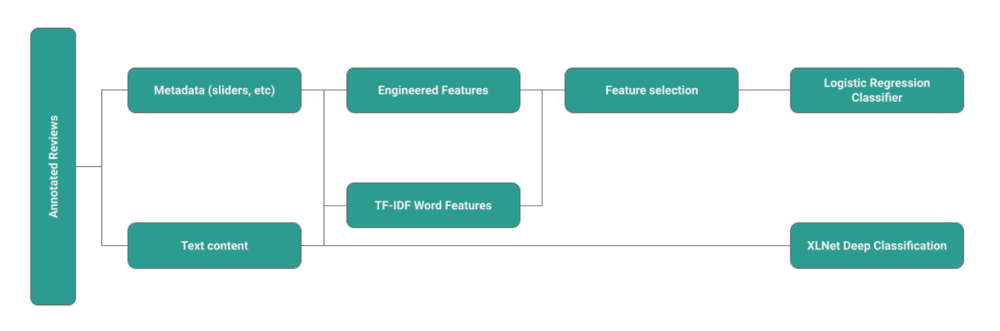
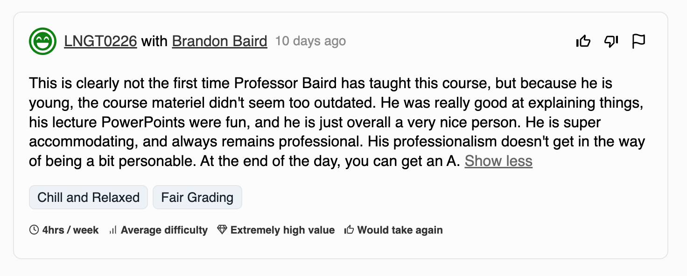
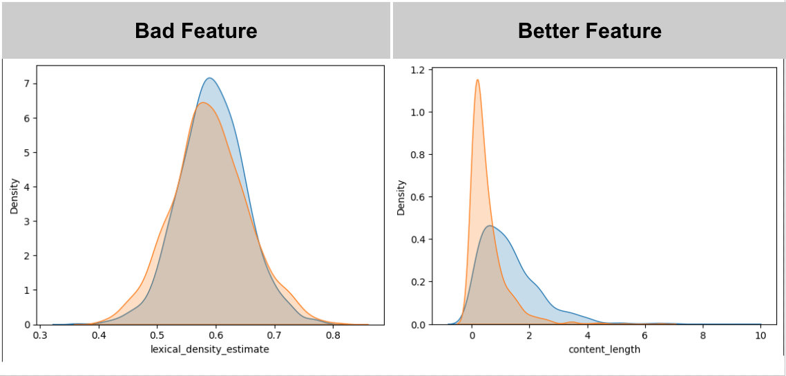
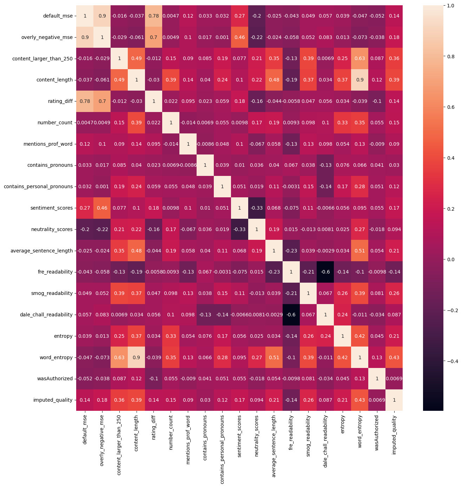
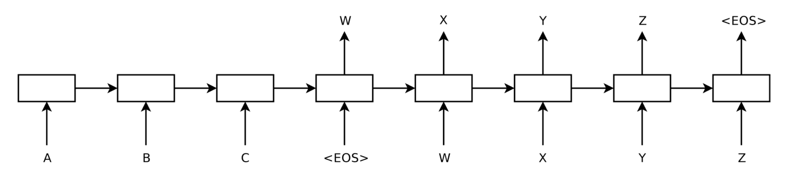
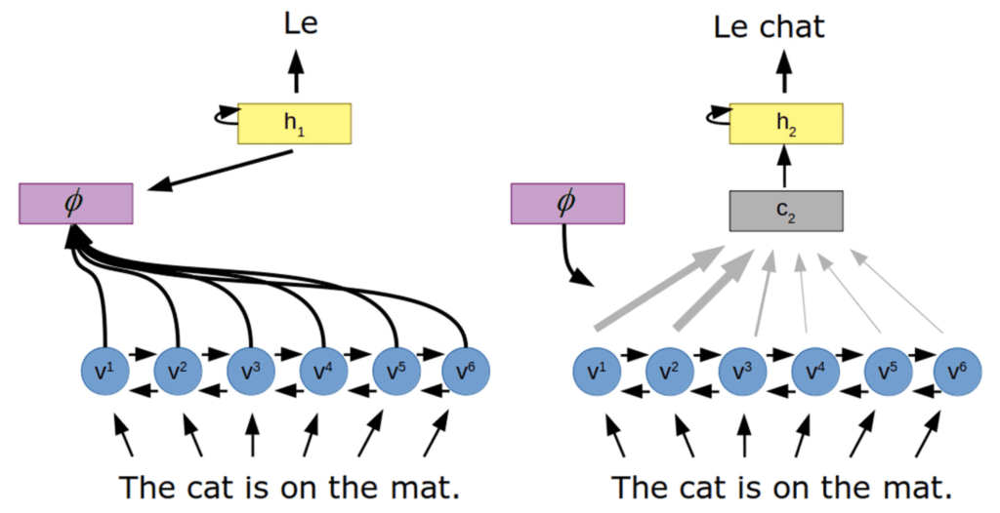
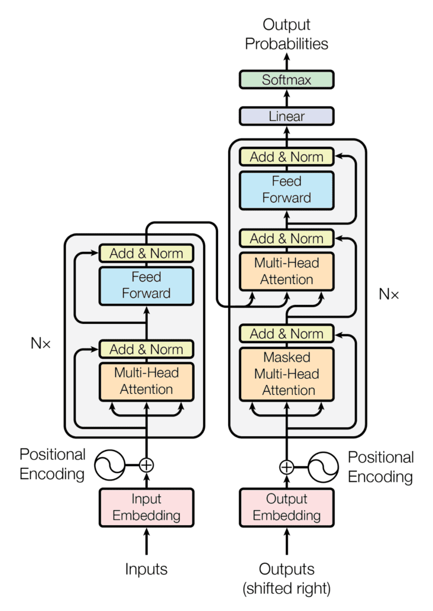
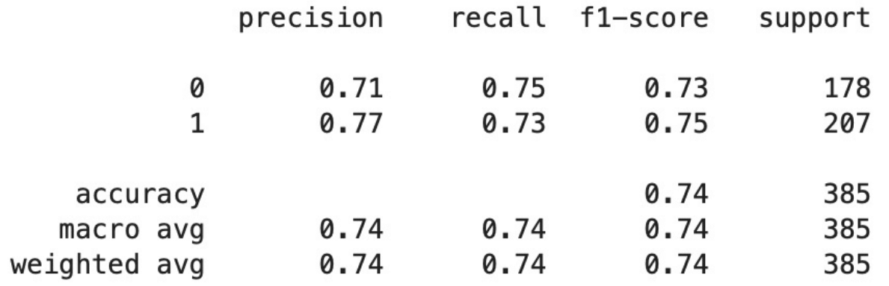
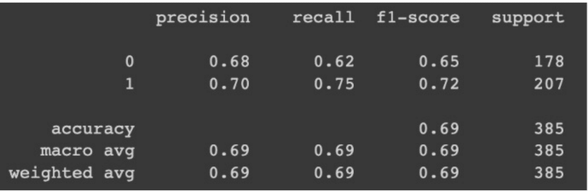

Abstract
We developed review quality classifiers based on text and metadata features from course reviews on MiddCourses, a student course evaluation site for Middlebury College. Using human annotation, split between 3 annotators, we determined the quality levels of reviews from a dataset of roughly 1,900 reviews. We fixed a annotation threshold such that our resulting binary labels (high and low review quality) were roughly equal. We then built and tested over 50 features and selected the top features based on their correlation with our quality labels and on the level of difference in the kernel density distribution of the feature when faceted by our quality label. We trained a logistic regression classifier on these engineered features and achieved an f1 score of about 0.75 for each class. We also trained XLNet, a transformer based, model on the text content of our reviews, achieving an f1 score of 0.65 for low-quality reviews and 0.72 for high-quality reviews.
Our source code is available at https://github.com/Nicholas-Sliter/csci0451-final-project.
Introduction
For most user-generated content (UGC) driven websites, the quality of the the content presented to other users is paramount to the success of the website. For example, on a site like YouTube, the quality of the videos that are recommended to users is a key factor in determining whether or not the user will continue to use the site. Sites that are overrun with spam or low-quality content are often abandoned by users in favor of sites that present less noise.
MiddCourses is a website that allows Middlebury students to review courses that they have taken. The site is driven by UGC. And as we see in the previous example, the quality of the reviews that are shown to users is a key factor in determining whether or not the user will:
gain valuable information about the course they are interested in
continue to use the site
recommend the site to other users
Creating a method to estimate the quality of a review on MiddCourses will allow better review curation and on-page sorting of reviews. This will allow users to more easily find the information they are looking for and increases the value of the site to users.
Additionally, a method to identity low-quality reviews can reduce administrative burden on the site’s moderators. Currently, moderators manually review each review that is submitted to the site to check for prohibited content. This is a time-consuming process that could be made more efficient by using a classifier reduce the number of reviews that need to be manually reviewed.
Our problem shares some similarities to the problem of spam detection but differs in key ways:
Low quality content is a superset of spam
While spam is certainly low-quality, not all low-quality content is spam. For example, a review that provides little information about the course is low-quality but not spam.
Existing filters remove most extremely low-quality content
When reviews are submitted to MiddCourses they are sent through a verification pipeline that tries to determine if the review is spam or if it contains prohibited content. This pipeline is fairly effective at preventing extremely low-quality content from being posted to the site. The pipeline focuses on preventing the following types of content from being posted:
- Reviews that are too long or too short
- Reviews that contain any profanity
- Reviews that contain junk characters (eg “asdfasdfa”)
- Reviews that are too self-similar (eg repeating the same phrase over and over)
- Reviews that don’t seem to be in English
- Reviews that contain padding to make the minimum character count
- Reviews that are copy-pasted from the course description
While this does not explicitly filter out spam, the site’s incentives and authenticate structure provide little incentive to post commercial-type spam reviews. The site is not monetized and non-100-level reviews are not indexed by search engines. This, along with the requirement to have a Middlebury student email address, means that there is little incentive or ability to post spam reviews to the site. And given the authentication requirement, users who post spam reviews can be easily identified and banned from the site.
This means that the remaining low-quality reviews do not contain the same types of content that are typically found in spam. This means that we cannot use the same methods that are used to detect spam to detect these reviews.
These remaining low-quality reviews are typically low-quality for one of the following reasons:
- Low-Effort Reviews: characterized by a lack of detail and a lack of information about the course
- Fraudulent Reviews: characterized by randomness and a lack of coherence
- Hyperbolic Reviews: characterized by excessive polarity and a limited perspective
This means our problem is isomorphic to a review helpfulness prediction problem, not a spam detection task.
Values Statement
Our project has direct implications for the MiddCourses website. It will impact users on 3 levels:
Users who are looking for information about a course:
Our project aims to allow users to more easily find the valuable information they are searching for. This will increase the value of the site to users and increase the likelihood that they will continue to use the site and recommend it to other users.
Nevertheless, if types of bias are introduced into the model, it could have a negative impact on these users. For example, if the model is biased against reviews that are written by non-native English speakers, those opinions would be less likely to be shown to users. This systematic de-ranking would be a negative outcome for users who share similar characteristics.
This impact is partial mitigated by the fact that the model will only used to sort reviews on the page. Users can still see all reviews by scrolling down the page. However, this means a user’s first impression of a course will be impacted by the model’s predictions.
Users who are writing reviews:
For users who are writing reviews, our project will have a direct impact on their experience. If a user’s review is flagged as low-quality, it may be subject to additional scrutiny by the site’s moderators. This could lead to an increased chance that the review is removed.
Additionally, if the model is used to sort reviews on the page, the user’s review may be less likely to be seen by other users. This may lead to a decreased sense of value for the user and may lead to them using the site less frequently.
Conversely, if a user’s review is flagged as high-quality, it may be more likely to be seen by other users. This may lead to an increased sense of value for the user and may lead to them using the site more frequently.
Since MiddCourses does not offer analytics of reviews to users, this impact is largely mitigated. Users would only be able to infer the impact of the model on their reviews based on the position of their review on the page. But even this is not a perfect indicator since review sorting takes into account other factors such as the date the review was posted and the number of user votes the review has received.
Instructors who are being reviewed:
Instructors face the largest potential for harm from our project. MiddCourses, like other review sites, is a controversial topic among instructors. On one hand, it allows them to get feedback from students and improve their courses. On the other hand, it allows students to publicly criticize them and their courses.
These sites are well-known in the literature for being biased against women, people of color, and non-native English speakers. This bias is often due to the fact that these groups are more likely to be criticized for their teaching style and communication skills. Or due to discrimination against these groups and the perception that they are less qualified to teach.
Our project has the potential to exacerbate this bias. Given the likelihood of biased training data since the model will be trained on real reviews, it is possible for the model to learn these biases. A biased model would look like one which promotes biased reviews with a higher probability compared to unbiased reviews.
If these biases exist in the reviews, it is likely that features like word choice and overall rating will be influenced by these biases.
At the model-level, we can try and mitigate these biases by not training directly from these features. Instead, we will try and build second-order features that are not directly influenced by these biases. For example, we can try and build features that are based on the sentiment of the review rather than the words used in the review. This will allow us to capture the sentiment of the review without being overly-influenced by the word choice.
Additionally, we use a triple-annotation method to hopefully reduce the impact of biased reviews on the model. This method allows us to downvote reviews that are flagged as biased by the annotators. This let’s us identify egregious cases of bias but may miss subtle cases of bias.
If the model is used to sort reviews on a course page, reviews about an instructor may be more or less likely to be seen by users. This may cause inflated or deflated perception of said instructor from student perspectives. This, in turn, may impact course enrollment and instructor evaluations.
Early review bias also influences the impact of the model on instructors. If the first reviews about an instructor are biased and are treated as high-quality by the model, it may influence the perception of the instructor for future students. This may lead to a feedback loop where the instructor is perceived as being better (or worse) than they actually are.
With this in mind, we worry about feedback loops in reviews (poisoning the well) where early reviews influence later reviews. Given our model’s interaction with how reviews are presented to users, we must consider these multi-order effects. We attempt to mitigate the feedback loop in two ways:
We use a time-decay factor in the review sorting algorithm. This means that reviews that are posted closer to the current date will be ranked higher than older reviews.
New users are not able to see reviews until they have submitted 2 of their own reviews in the previous 6 months. This helps to ensure that users are not influenced by existing reviews when writing their own reviews.
With a biased model, instructors could be presented with negative or positive bias.
Negative bias against instructors has a higher potential for harm than positive bias. This is because negative bias can lead to a feedback loop where instructors are perceived as being worse than they actually are. This can lead to lower enrollment in their courses and lower instructor evaluations. This, in turn, can lead to lower pay and less job security for instructors. This is especially true for instructors who are not tenured or who are on the tenure track. We also worry about the emotional impact of unfair criticism on instructors. This can lead to increased stress and anxiety for instructors. This can lead to a negative impact on their mental health and their ability to teach effectively.
At the review sorting level, negative bias is partially mitigated by a hardcoded bias for positive reviews. This means that reviews with a positive overall rating will be ranked higher than reviews with a negative overall rating. The intention of this choice is to shift bias towards the less-harmful positive direction.
Positive bias, on the other hand, primarily negatively impacts students. While positive bias can certainly unfairly aid an instructor, its impact is felt by the students who choose said instructor because of the biased review and have a worse experience than what they expected.
There is a large potential for harm here and we must be careful not to exacerbate existing biases. There is the potential for large-scale feedback loops if our model is biased. And certainly we see pathways to real-world harm.
Overall, we believe that our model will make the world (Middlebury) a better place. By identifying high and low quality reviews on MiddCourses we hope to make it easier for Middlebury students to find high quality information on the courses they are searching for. And therefore improve their ability to find courses they will enjoy. This belief assumes that:
Higher quality reviews lead to better outcomes for students.
Our classification of reviews is fair and does not unduly discriminate or disadvantage specific groups of students.
As you can see, our primary focus is on the impact of our model on students. This is because students are the primary users of MiddCourses. And therefore the primary beneficiaries of our model. We believe that our model will have a positive impact on students by making it easier for them to find high quality information on the courses they are searching for. This will allow them to make better decisions about which courses to take and therefore improve their experience at Middlebury.
Material and Methods
Data
We used fully anonymous (user-unaware) data from MiddCourses of reviews submitted prior to 2023-04-21 18:09:01.856+00. This data was provided to us by the MiddCourses team. The SQL query used to gather the data is available on GitHub in the code repository.
Each row represents a review of a course-instructor pair.
A full datasheet is available at https://github.com/Nicholas-Sliter/middcourses2#review-structure.
Limitations
The review data is UGC (user-generated content) and therefore has the following limitations:
Response Bias: The data is biased towards users who are more likely to leave reviews. This means that the data is not representative of the entire population of Middlebury students. This is a common problem with UGC and is difficult to mitigate.
Extremity Bias: As review data, MiddCourses reviews exhibit extremity bias. This means that reviews are more likely to be either very positive or very negative. This is a well-known problem with review data and is difficult to mitigate.
Acquiescence Bias: Reviewers may feel pressured to leave a positive review for a course or instructor. This is especially true for courses and instructors that are well-liked.
Reviewers may also feel compelled to leave reviews due to the incentive structure of the site. These reviews may not exhibit an accurate representation of the course or instructor. Indeed, it is these reviews that we want to identify and de-rank.
Approach
We approached the problem by conducting experiments with feature engineering and NLP methods to identify a set of features that would effectively classify reviews based on quality. On top of that, we trained our data on a deep language model (XLNet) to compare those results to the results of our own feature engineering. Our objective was to design a classification model that most accurately predicted review quality based on the input data.

To begin, we performed triple-annotation on the entire dataset using an annotation tool (midd.courses/annotate) and transformed the annotations into classification labels based on a certain threshold. Since there were no inherent labels for review quality, we relied on annotations as the ground truth. Recognizing the subjectivity of this process, we each individually annotated the data to mitigate bias.

Example of a review on the annotation tool
In order to ensure that our annotations were consistent, we created an annotation rubric. The rubric gave us a rough idea of whether to give the annotation a thumbs up (+1), thumbs down (-1), or leave it blank (0):
| Great review (+1) | Ok review (+0) | Bad review (-1) |
|---|---|---|
| Text consistent with sliders | Text mostly consistent with sliders | Text is not consistent with sliders |
| Text is well written | Text is well written | Text is difficult to read |
| Gives a balanced picture of the course | Gives a limited perspective on the course (e.g. only negative) | Gives a very limited perspective on the course (e.g. hyperbolically negative) |
| Text offers valuable information not found in the sliders and other questions | Text does not offer much information about the course not found in the sliders and other questions | Text is irrelevant to the course or contains irrelevant meta information (e.g. personal information, spam, padding to make character count, etc) |
This rubric gave us a consistent guideline by which to score the reviews. Once the annotations were complete, each review received a vote score which was the sum of the annotation values. We then decided on the threshold of 0 to create our target vector \(y\). Any review below this threshold received an imputed quality of 0 (indicating lower quality) and any review above the threshold received an imputed quality of 1.
Metadata-based approach (Feature Engineering & Logistic Regression):
For the initial model, we engineered features using both the textual content of the reviews and the non-textual metadata associated with each review. This process entailed brainstorming and developing the features, evaluating their correlation with the imputed_quality (our target vector), and assessing the intercorrelation among the features to mitigate multicollinearity. We then chose the highest performing features and ran them through a linear regression model.
The list below shows all of the features we selected for our classification task.
Metadata-based:
| Feature | Description | Qual./Quant. |
|---|---|---|
default_mse |
Mean squared error between default slider values and the slider values of the review | quant. |
overly_negative_mse |
Mean squared error between overly negative slider values and the slider values of the review | quant. |
rating_diff |
Difference between the default value of the rating slider and the value of the rating slider for the review | quant. |
wasAuthorized |
User had authorization to view other reviews at the time they submitted their review | qual. |
Text-based:
| Feature | Description | Qual./Quant. |
|---|---|---|
default_mse |
Mean squared error between default slider values and the slider values of the review | quant. |
overly_negative_mse |
Mean squared error between overly negative slider values and the slider values of the review | quant. |
rating_diff |
Difference between the default value of the rating slider and the value of the rating slider for the review | quant. |
content_larger_than_250 |
Text contains more than 250 characters | qual. |
content_length |
Number of characters in text (normalized) | quant. |
number_count |
Number of numbers in text | quant. |
mentions_prof_word |
Text mentions any word related to “professor” | qual. |
contains_pronouns |
Text contains pronouns | qual. |
contains_personal_pronouns |
Text contains personal pronouns | qual. |
average_sentence_length |
Average length of sentence in text | quan. |
fre_readability |
Flesch Reading Ease, a formula that measures the text readability (from 0-100) based on the average length of your sentences (measured by the number of words) and the average number of syllables per word | quant. |
smog_readability |
SMOG index, a readability formula that assesses the “grade-level” of text based on the number of polysyllabic words | quant. |
dale_chall_readability |
Dale-Chall readability formula, a method used to determine the approximate “grade-level” of a text based on sentence length and the number of “hard” words | quant. |
entropy |
Shannon entropy based on the frequency of each character in the text | quant. |
word_entropy |
Shannon entropy based on the frequency of each word in the text | quant. |
sentiment_scores |
Sentiment scores calculated using vaderSentiment’s SentimentIntensityAnalyzer |
quant. |
neutrality_scores |
Neutrality scores calculated using vaderSentiment’s SentimentIntensityAnalyzer |
quant. |
Finally, we also included as a feature a vectorized version of the text. The vectorizer applies TF-IDF (Term Frequency-Inverse Document Frequency) weighting to prioritize important words while filtering out common and less informative ones, using specified parameters such as maximum features, maximum document frequency, minimum document frequency, and a set of English stop words.
In order to select the best features, we looked at the coorelation between features and imputed_quality and feature intercoorelation. Furthermore, we looked at density plots to discover quantitative features that caused different distributions for reviews with differing imputed_quality.

Density plots for two features of varying quality

Correlation matrix of our selected features
Text-based approach (XLNet):
In an attempt to achieve better results, we also experimented with using a deep model to classify reviews. While exploring the possible options for deep NLP, we came across multiple sequence-in architectures such as Recurrent Neural Networks (RNNs), Long-Short Term Memory (LSTM) and Gated Recurrent Units (GRU). Eventually we decided to implement the Transformer architecture, one of the most prominent recent advancements in deep learning.
In a 2017 paper titled “Attention is All You Need,” the the Transformer architecture was proposed by a team led by Ashish Vaswami (Vaswani et al. 2017). It has since become the go-to method for a wide range of NLP tasks and it’s probably most well known for its use in GPT-3.
Unlike previous NLP approaches that often relied on encoder-decoder recurrent neural networks (RNNs) for sequence modeling, the Transformer architecture introduced an attention mechanism between the encoder and decoder (Cristina 2023b). Attention is a method that allows the neural network to focus on only the most important parts of the input sequence. Furthermore, it eliminates the issue of diminishing gradients found when using RNNs. In other words, accuracy does not drop when the number of inputs in the sequence increases.

Typical sequence-in sequence-out RNN with encoder and decoder
from “Sequence to Sequence Learning with Neural Networks”

Encoder decoder with attention
from “Attention in Psychology, Neuroscience, and Machine Learning”
By using self-attention mechanisms, the Transformer architecture avoids the sequential nature of RNNs, making it highly parallelizable and quickly optimizable (through backpropagation). It therefore trains very efficiently on parallel processors like GPUs (Cristina 2023b).

Full transformer model
from “Attention is All You Need”
Our specific model utilizes XLNet. XLNet is an open-source Transformer architecture that has been pre trained using permutation-based autoregressive training to address limitations of the traditional autoregressive models, mainly the lack of bidirectional context (Yang et al. 2020; Cristina 2023a). This modification enables XLNet to better capture bidirectional context, leading to improved performance on several NLP tasks.
We accessed XLNet through SimpleTransformers based on the Transformers library by HuggingFace. This allowed us to quickly implement the Transformer architecture and then tune the parameters to figure out the best outcomes. We created the model to take in text as a sequence of words (which are embedded) and then output either 0 or 1 as the predicted imputed_quality. We also trained only the final layer of the model.
Simple transformers documentation: https://simpletransformers.ai/docs/installation/
Further reading on Transformer architecture: - https://machinelearningmastery.com/a-tour-of-attention-based-architectures/ - https://machinelearningmastery.com/the-transformer-model/
Results

Results using Logistic Regression (i.e. hand-engineered features)

Results using XLNet
Comparing the first and second images, using the hand-engineered features led to a better accuracy. We can conclude that the engineered features were more accurate using the F1 score. F1 score measures the accuracy of a model and is calculated using the equation,
\(F_{1} = 2 \times \frac{precision \ \times \ recall}{precision \ + \ recall}\)
where precision is what proportion of our positive predictions are correct and recall is what proportion of actual positives are identified. The second image shows the classification of the quality of reviews. Based on the threshold for imputed_quality, any review with a score greater than 0 (annotation points) was labeled as a “1”. Other reviews that did not meet this requirement would be labeled as a “0”.
We believe that our results from the hand-engineered features may have worked better than the XLNet method due to the size of our data. Deep models generally work better with a larger data set and because we were working with a small dataset and there were only three annotators, it made it harder to find a pattern in the reviews. In addition, since XLNet was pre-trained it may not have worked well with classifying reviews based on quality in our case.
Concluding Discussion
We defined a “full success” in our project proposal to be:
- feature pipeline and classifier implemented in production on MiddCourses
- annotated data
- feature pipeline in Python
- classifiers in Python
- notebook that explores the model
We achieved a partial success by implementing all goals excluding running our model in production on MiddCourses. Due to dependency issues, deploying the model in production would require developing libraries for important features from scratch or dropping those features. Either case in unacceptable. In the first case, it is out of scope and prohibitively difficult to develop the libraries we would need. In the second case, we would be dropping important features that would decrease the accuracy of our model to unacceptable levels.
In addition, our model’s performance is okay but not great. Due to this, we are apprehensive about deploying the model. We believe that over time with more data and more annotations, the model will improve. However, we do not have the time to wait for this improvement for this project.
Our results were interesting as we found many of the features that are lauded in our cited works were not very useful with our data. This indicates that there are structural differences between our problem of review quality classification on MiddCourses reviews as compared to the papers that mostly focus on Amazon reviews.
Group Contributions
Nicholas
I worked on much of the feature engineering for the metadata-based model. I also worked on the data collection and annotation, building the annotation tool on MiddCourses and providing the data. For the final report, I worked on the abstract, introduction, values-statement, and part of the methods sections.
Paul
I worked on annotating the reviews on MiddCourses website and finding ways to measure lexical richness using a Python module called LexicalRichness. For the final report I worked on the results in addition to parts of the conclusion.
Aidan
I worked on researching deep NLP methods and implementing and fine-tuning the XLnet. I also annotated the reviews and helped out a little with the feature engineering. For the final report I wrote both the metadata and text-based part of the approach section.
Personal Reflection
Our group project was on classifying reviews through natural language processing, and while working on this project I learned many things about NLP. This project allowed me to get a deeper understanding about NLP such as its step-by-step approach into implementation. The “Approach” section shows the illustration I learned from. One thing I learned was that not all features are useful, and there are some features that work very well while others are far less significant. As expected, features such as content length and word entropy were useful because we were working on text classification. In addition, seeing the underlying code and seeing how they work was very interesting.
Throughout the course of the project, I mostly experimented with the code finding ways to measure information density and features that might be of use. I used a Python module called lexicalrichness for measuring the quality of the reviews using type-token ratio and other various measure text quality. Ultimately, they were not used in the final project, but nevertheless, it was a valuable experience. Overall, I believe I achieved some of my goals, but in other areas I fell short. For example, when my group members worked on something that I was not familiar with, I would try to learn what they were doing or trying to implement. In terms of learning the theory and concepts, I think I am where I want to be.
Something that sort of surprised me was the results of our project. As a novice in machine learning, I thought about 1900 reviews would be sufficient to get accurate results, but I was mistaken. I learned that, in machine learning, even a several hundred data points is not enough to obtain a solid accuracy.
I believe that this project was beneficial to my learning goals and will be useful in the future if I were to work on natural language processing, not just for reviews, but text classification in general.